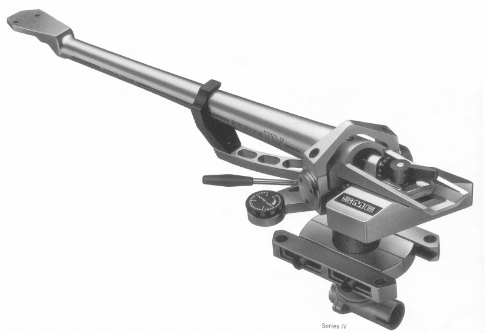

Serise �W

■価格 240,000円
■型式 スタティックバランス型
■全長
■実行長 233.15�o
■オーバー・ハング
■トラッキングエラー
■針圧範囲
■アーム高さ調整 56.4〜87�o（取付面〜アーム最高部）
■アームベース穴
■アンチスケートディバイス あり
■アームリフター あり
■ラテラルバランサー
■カートリッジ自重
■線間容量
■発売 1987年4月
■販売終了 年頃
■備考 価格は1987年頃のもの
1993年には280,000円
1994年には220,000円
パイプアーム材にダイキャスト・マグネシウムを使用。
ヘッドシェル部からカウンターウェイト取付部まで
完全に一体化したテーパード・パイプアーム。
垂直ベアリングに密閉型ベアリングを採用。
アームベースは2分割式、プレイヤーベース取付部と
ピラー締め付け部に別れ、結合部分にラックギアを
切り込み、オーバハング調整が可能。
フルイドダンパーをアレンジした新開発オイルダンプ（オプション）
2芯シールド型コード、360度回転可能なコネクター採用。
SMEのインデックスへ